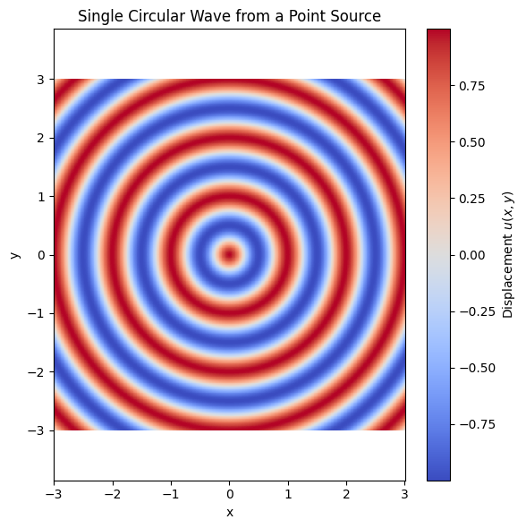

Problem 1
Interference Patterns on a Water Surface
Motivation
Interference occurs when waves from multiple sources overlap in space, creating new wave patterns. On a water surface, this is easily observed when circular ripples from different points intersect, producing interference patterns.
These patterns reveal:
- Constructive interference: where waves reinforce each other
- Destructive interference: where waves cancel each other
Studying such patterns helps us understand:
- Superposition principle
- Phase relationships between waves
- Real-world wave interactions
Problem Statement
We aim to simulate and analyze the interference pattern created by circular waves emitted from coherent point sources located at the vertices of a regular polygon.
Theoretical Background
Single Circular Wave
The disturbance caused by a single point source at position \( (x_0, y_0) \) on the water surface is modeled by:
Where:
- \( u(x, y, t) \): Displacement at position \( (x, y) \) and time \( t \)
- \( A \): Amplitude
- \( k = \frac{2\pi}{\lambda} \): Wave number
- \( \lambda \): Wavelength
- \( \omega = 2\pi f \): Angular frequency
- \( f \): Frequency
- \( r = \sqrt{(x - x_0)^2 + (y - y_0)^2} \): Distance from source to point
- \( \phi \): Initial phase

Superposition of Waves
If there are \( N \) identical, coherent wave sources, the total displacement at any point \( (x, y) \) is:
Where:
- \( r_i = \sqrt{(x - x_i)^2 + (y - y_i)^2} \): Distance from the \( i^\text{th} \) source to point \( (x, y) \)
Simulation: Square Configuration (4 Sources)
We simulate 4 point sources placed at the vertices of a square, centered at the origin.
Simulation Parameters
- Polygon type: Square (4 vertices)
- Radius \( R = 1 \)
- Amplitude \( A = 1 \)
- Wavelength \( \lambda = 1 \)
- Frequency \( f = 1 \)
- Phase \( \phi = 0 \)
- Time snapshot \( t = 0 \)
Python Code
The following Python script simulates the interference pattern produced by four coherent wave sources placed at the vertices of a square, centered at the origin. Each source emits circular waves with the same amplitude, wavelength, and frequency.
The wave equation used for each point source is:
The total displacement is calculated by the superposition of waves from all sources:
Here’s the full Python implementation:
```python import numpy as np import matplotlib.pyplot as plt
Wave parameters
A = 1 wavelength = 1 frequency = 1 k = 2 * np.pi / wavelength omega = 2 * np.pi * frequency phi = 0 t = 0 # single time snapshot
Grid setup
x = np.linspace(-3, 3, 500) y = np.linspace(-3, 3, 500) X, Y = np.meshgrid(x, y)
Square: 4 vertices on a circle
N = 4 R = 1 angles = np.linspace(0, 2*np.pi, N, endpoint=False) sources = [(R * np.cos(a), R * np.sin(a)) for a in angles]
Superposition of waves
Z = np.zeros_like(X) for (x0, y0) in sources: r = np.sqrt((X - x0)2 + (Y - y0)2) Z += A * np.cos(k * r - omega * t + phi)
Plotting
plt.figure(figsize=(8, 6)) plt.pcolormesh(X, Y, Z, shading='auto', cmap='RdBu') plt.colorbar(label='Water Surface Displacement \(u(x, y)\)') plt.scatter(zip(sources), color='black', marker='o', label='Sources') plt.title('Interference Pattern from 4 Point Sources (Square Configuration)') plt.xlabel('x') plt.ylabel('y') plt.legend() plt.axis('equal') plt.tight_layout() plt.show()